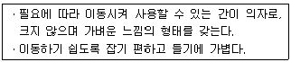
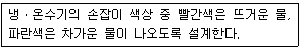
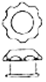
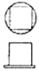
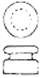
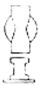
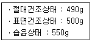
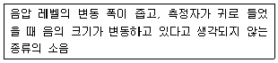
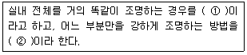

실내건축기사(구) (2011-03-20 기출문제)
1과목: 실내디자인론
1. 다음 중 공간의 레이아웃(lay-out)과정에서 고려하여야 할 사항과 가장 거리가 먼 것은?
- 동선
- 공간별 그룹핑
- 가구의 크기와 점유면적
- 재료의 마감과 색채계획
(정답률: 79%)

2. “Design image를 구축한다”의 의미로 가장 알맞은 것은?
- 소유물을 list-up하는 것
- 사용되는 재료를 선택하는 것
- 디자인의 우위성을 부각시키는 것
- 기능적, 정서적, 특징적 공간이미지를 만드는 것
(정답률: 88%)
3. 그리드플래닝(grid planning)에 대한 설명으로 옳지 않은 것은?
- 그리드플래닝은 논리적이고 합리적인 디자인 전개를 가능하게 한다.
- 그리드가 단순화되고 보편적인 법칙에 종속되면 틀에 박힌 계획이 되기 쉽다.
- 직사각형 그리드는 가장 기본적인 형태의 그리드로 좌우대칭이기에 중립적이며 방향성도 없다.
- 삼각형 그리드는 일반적으로 황금비율에 의한 그리드이거나 경제적 스팬에 준한 그리드를 사용한다.
(정답률: 41%)
4. 리듬의 원리 중 공간, 형태, 색상 등의 점차적인 변화로 생기며 하나의 성질이 증가 또는 감소됨으로써 나타나는 것은?
- 점이
- 대비
- 균형
- 강조
(정답률: 75%)
5. 다음 설명에 알맞은 의자의 종류는?

- 카우치(couch)
- 체스터필드(chesterfield)
- 라운지체어(lounge chair)
- 풀업 체어(pull-up chair)
(정답률: 76%)
6. 면에 대한 설명으로 옳지 않은 것은?
- 면의 구성방법에는 지배적 구성, 분리구성, 일렬구성, 자유구성 등이 있다.
- 곡면과 평면을 결합으로 대비 효과를 얻을 수 있다.
- 실내 공간에서의 모든 형태는 면의 요소로 간주되며, 크게 이념적 면과 현실적 면으로 대별된다.
- 면의 심리적 인상은 그 면이 놓인 위치, 질감, 색, 패턴 또는 다른 면과의 관계 등에 따라 차이를 나타낸다.
(정답률: 48%)
7. 다음 중 실내디자인의 개념과 가장 관계가 먼 것은?
- 실내디자인은 대상 공간의 기능을 만족시켜야 한다.
- 실내디자인은 건축적구조 및 환경과의 관계를 고려해야 한다.
- 실내디자인은 인간 생활에 대한 쾌적함, 인간적 감성을 만족시켜야 한다.
- 실내디자인은 사용자의 편의성보다 디자이너의 주관적 창의성이 강조되어야 한다.
(정답률: 89%)
8. 다음 중 직접조명방식에 속하는 것은?
- 코브 조명
- 광천장 조명
- 코니스 조명
- 발란스 조명(상향조명)
(정답률: 69%)
9. 형태의 지각 심리 중 형과 배경의 법칙에 관한 설명으로 옳지 않은 것은?
- 명도가 낮은 것보다는 높은 것이 배경으로 인식되기 쉽다.
- 대체적으로 면적이 작은 부분은 형이 되고, 큰 부분은 배경이 된다.
- 형과 배경이 교체하는 것을 모호한 형(ambiguous figure) 혹은 반전 도형이라고도 한다.
- 형과 배경이 순간적으로 번갈아 보이면서 다른 형태로 지각되는 심리의 대표적인 예로 ‘루빈의 항아리’를 들 수 있다.
(정답률: 71%)
10. 디자인의 원리 중 조화에 관한 설명으로 가장 알맞은 것은?
- 전체적인 조립방법이 모순 없이 질서를 잡는 것
- 규칙적인 요소들의 반복으로 디자인에 시각적인 질서를 부여하는 통제된 운동감각
- 중심축을 경계로 형태의 요소들이 시각적으로 균형을 이루는 상태
- 저울의 원리와 같이 중심축을 경계로 양측이 물리적으로 힘의 안정을 구하는 현상
(정답률: 50%)
11. 전시공간의 바닥에 대한 설명 중 옳지 않은 것은?
- 요철이나 잦은 단차는 피한다.
- 색은 벽보다 밝고 반사율이 높은 것이 좋다.
- 바닥재의 문양은 전시실을 압도하지 않는 것으로 한다.
- 미끄럽지 않고 발소리가 나지 않는 마감재료가 요구된다.
(정답률: 83%)
12. 수직벽면을 빛으로 쓸어내리는 듯한 효과를 주기 위해 비대칭 배광방식의 조명기구를 사용하여 수직벽면에 균일한 조도의 빛을 비추는 조명의 연출기법은?
- 그레이징(glazing)기법
- 실루엣(silhouette)기법
- 월 워싱(wall washing)기법
- 그림자 연출기법(shadow play)
(정답률: 90%)
13. 실내디자인 프로세스 순서로 가장 알맞은 것은?
- 기획 - 계획ㆍ설계 - 시공 - 감리 - 평가
- 기획 - 감리 - 계획ㆍ설계 - 시공 - 평가
- 계획ㆍ설계 - 기획 - 시공 - 감리 - 평가
- 계획ㆍ설계 - 평가 - 기획 - 감리 - 시공
(정답률: 79%)
14. 공간의 차단적 구획에 사용되는 것으로 시각적 연결감을 주면서 프라이버시를 확보할 수 있는 것은?
- 열주
- 조각
- 조명
- 낮은 칸막이
(정답률: 41%)
15. 방풍 및 열손실을 최소로 줄여주면서 통행의 흐름을 완만하게 해주는 문의 형태는?
- 미닫이문
- 회전문
- 여닫이문
- 접이문
(정답률: 84%)
16. 사무소 건축의 실단위계획 중 개실시스템에 대한 설명으로 옳은 것은?
- 방깊이에 변화를 주기 쉽다.
- 독립성과 쾌적감의 이점이 있다.
- 전면적을 유용하게 이용할 수 있다.
- 칸막이벽이 없어 공사비가 저렴하다.
(정답률: 69%)
17. 질감(texture)에 대한 설명 중 옳지 않은 것은?
- 매끄러운 질감은 빛을 흡수한다.
- 물체가 갖고 있는 표면상의 특징이다.
- 촉감적 질감과 시각적 질감으로 구분할 수 있다.
- 효과적인 질감 표현을 위해서는 색채와 조명을 동시에 고려하여야 한다.
(정답률: 84%)
18. 실내디자인 프로젝트에 대한 설명 중 틀린 것은?
- 개보수인 경우는 현장의 정확한 실측과 조사가 필요하다.
- 건축 설계와 병행되는 경우는 건축설계자와 협조가 필요하다.
- 기존 공간의 개보수는 물론 신축공간의 디자인도 실내 디자인에 포함된다.
- 대수선 허가가 필요한 주요 구조부의 변경은 어떠한 경우에도 할 수 없다.
(정답률: 83%)
19. 인테리어 이미지에 대한 설명 중 옳지 않은 것은?
- 댄디(Dandy)는 강하고 분명한 디자인으로 활동감과 약동감을 갖게 한다.
- 자연스러움(Natural)은 단순하면서 소박함과 따스함이 있는 형태를 기본으로 한다.
- 고저스(Gorgeous)는 호화롭고 사치스런 이미지로 전통적인 표현은 물론 현대적 표현도 가능하다.
- 캐쥬얼(Causal)은 자유롭고 편한 이미지를 나타내며, 신선함, 활동감, 즐거움 등이 연출 포인트가 된다.
(정답률: 78%)
20. 다음 중 상점의 매장 내 진열장을 배치계획할 때 가장 중심적으로 고려해야 할 사항은?
- 고객동선
- 영업시간
- 조명의 조도
- 진열 케이스의 수
(정답률: 86%)
2과목: 색채학
21. 실내의 색채조절에 있어서 틀린 설명은?
- 천장색의 경우 반사율이 높으면서 눈이 부시지 않는 무광택 재료로 시공하는 것이 좋다.
- 벽의 아랫부분 굽도리는 벽의 윗부분보다 더 밝게 해 주는 것이 좋다.
- 바닥의 경우 반사율이 낮은 색이 좋으며, 너무 어둡거나 너무 밝은 것은 좋지 않다.
- 문의 양쪽기둥이나 창문틀은 벽의 색과 맞도록 고려하여야 한다.
(정답률: 77%)
22. 19세기 화학자로 「Contrast on Color」를 저술하여 근대 색채조화론의 기초를 만든 사람은?
- 슈브럴(M.E.Chevreul)
- 베졸드(W.V.Bezold)
- 오스트발트(W.Ostwald)
- 브루케(E.Brucke)
(정답률: 44%)
23. 문 스펜서가 색채조화론을 1944년 미국 광학회의 잡지 JOSA에 발표했는데 이 논문의 주된 내용과 관련 없는 것은?
- 고전적인 색채조화론의 기하학적 공식화
- 톤을 이용한 효과
- 색채 조화에 있어서의 미도측정
- 색채 조화에 있어서의 면적
(정답률: 49%)
24. 색채조화의 원리 중에서 가장 보편적이며 공통적으로 적용할 수 있는 원리의 조합은?
- 질서성 - 친근성 - 동류성 - 명료성
- 동류성 - 비모호성 - 친근성 - 합리성
- 질서성 - 친근성 - 상대성 - 전통성
- 상대성 - 합리성 - 예술성 - 객관성
(정답률: 68%)
25. 스펙트럼 분광색의 파장이 긴 색부터 파장이 짧은 색으로 나열된 것은?
- 노랑 - 파랑 - 주황
- 빨강 - 보라 - 초록
- 보라 - 빨강 - 노랑
- 노랑 - 초록 - 파랑
(정답률: 73%)
26. 무대 디자인과 디스플레이를 할 때 색광을 다르게 하여 한정된 공간이 여러 가지 색으로 보여질 수 있다. 이처럼 조명에 의하여 물체의 색이 결정되는 광원의 성질은?
- 조건등색
- 연색성
- 색각이상
- 발괄성
(정답률: 75%)
27. 색채와 모양에 대한 공감각이 삼각형의 형태를 상징하는 색으로 명시도가 높아 날카로운 이미지를 갖고 있어서 항상 유동적이고 운동량이 많은 느낌의 색은?
- 빨강
- 보라
- 노랑
- 녹색
(정답률: 69%)
28. 감법혼색에 대한 설명 중 옳은 것은?
- 색광혼합 또는 감산혼합이라고 한다.
- 감법혼색의 삼원색은 빨강(R), 녹색(G), 파랑(B)이다.
- 혼합하면 할수록 명도가 높아진다.
- 혼합하면 할수록 채도가 낮아진다.
(정답률: 52%)
29. 동시대비현상과 관계없는 것은?
- 명도대비
- 마하밴드효과
- 진출과 후퇴
- 잔상효과
(정답률: 48%)
30. 혼색계(混色系, color mising system)에 대한 설명 중 옳은 것은?
- 물체색을 표시하는 표색계로서 표준색표의 기호나 번호를 붙인다.
- 심리적인 색의 3속성에 따라 행해지는 혼색체계이다.
- 심리, 물리적인 빛의 혼색실험 결과에 기초를 둔 것이다.
- Munsell 표색계가 대표적인 것으로 촉색학의 기본이 된다.
(정답률: 44%)
31. 오스트 발트 색채계의 기본이 되는 색채가 아닌 것은?
- 모든 파장의 빛을 완전히 흡수하는 이상적인 검정
- 모든 파장의 빛을 완전히 반사하는 이상적인 흰색
- 모든 파장의 빛을 완전히 흡수 및 반사하는 이상적인 회색
- 이상적인 순색
(정답률: 69%)
32. 다음 중 색료의 두 색을 혼합하여 만들 수 없는 색은?
- 주황
- 노랑
- 연두
- 남색
(정답률: 64%)
33. 유채색의 수식형용사 중 ‘선명한’을 뜻하는 것은?
- pale
- light
- vivid
- dull
(정답률: 83%)
34. 색의 3속성 중 명도의 의미는?
- 색의 이름
- 색의 맑고 탁함의 정도
- 색의 밝고 어두움의 정도
- 색의 순도
(정답률: 72%)
35. 색채가 주는 감정적 효과에 대한 내용으로 틀린 것은?
- 난색, 고채도일수록 무거운 느낌이다.
- 저재도, 저명도일수록 어두운 느낌이다.
- 고채도, 고명도일수록 화려한 느낌이다.
- 한색, 저채도일수록 차분한 느낌이다.
(정답률: 80%)
36. 색의 연상에 대한 내용 중 틀린 것은?
- 빨강, 주황 등은 식욕을 증진시키는데 효과적인 색이다.
- 파랑, 하늘색 등은 일반적으로 청결한 이미지를 나타낸다.
- 금속색(주로 은회색 등)은 첨단적, 현대적인 이미지를 나타낸다.
- 검정색은 죽음, 공포, 암흑은 연상시켜 공겁제품의 색으로는 부적합하므로 사용하고 있지 않다.
(정답률: 77%)
37. 다음 중 색채조적의 목적과 거리가 먼 것은?
- 눈의 피로를 감소시켜야 한다.
- 작업의 활동적인 의욕을 높인다.
- 위험을 방지하는 안전을 고려한다.
- 심미적인 조화를 우선적으로 고려한다.
(정답률: 76%)
38. 다음 색 중 어두운 곳에서 가장 밝게 느껴지는 것은?
- 노랑
- 빨강
- 주황
- 청록
(정답률: 46%)
39. JPEG이미지 파일형식에 대한 설명으로 틀린 것은?
- 사진 등 정교한 색상표현에 많이 쓰인다.
- JPEG 포맷은 256색이라는 한계를 갖는다.
- 압축률을 높일수록 이미지의 손상이 커지므로 사용시 압축 정도를 조절해야 한다.
- 호환성이 우수하다.
(정답률: 62%)
40. 적색을 본 후 황색을 보게 되면 색상이 황록색으로 보이게 된다. 이러한 현상은?
- 명도대비
- 연변대비
- 동시대비
- 계시대비
(정답률: 52%)
3과목: 인간공학
41. 종이와 글자 간에는 상당한 대비(contrast)를 가지고 있다. 만일 종이의 반사도가 50%, 글자의 반사도가 10%라면 이때의 대비(%)는 얼마인가?
- 120%
- 80%
- 40%
- 20%
(정답률: 47%)
42. 다음 중 최대작업영역으로 옳은 것은?
- 위팔과 아래팔을 곧게 펴서 닿을 수 있는 영역
- 정상적으로 앉은 자세에서 머리는 고정하고, 눈으로 확인 가능한 최대영역
- 두 발은 고정 상태에서 상체를 이용하여 손 끝이 도달할 수 있는 최대영역
- 위팔은 자연스럽게 수직으로 늘어뜨린 채 아래팔만으로 편안하게 뻗어 닿을 수 있는 영역
(정답률: 46%)
43. 다음 중 망막의 간상세포에 관한 설명으로 옳은 것은?
- 채도를 식별하는 작용을 한다.
- 명암을 식별하는 작용을 한다.
- 색을 식별하는 작용을 한다.
- 신체의 평형을 감지하는 기능을 한다.
(정답률: 75%)
44. 다음 중 신호검출이론(SDT)에 대한 설명으로 옳은 것은?
- 쉽게 식별할 수 없는 두 독립상태 상황에 적용된다.
- 신호가 약하거나 노이즈가 많을수록 감도는 커진다.
- 신호와 노이즈는 모두 F-분포를 따른다고 가정한다.
- 신호검출을 간섭하는 노이즈(noise)가 항상 있는 것은 아니다.
(정답률: 42%)
45. 다음 중 영상표시단말기(Visual Disolay Terminal)를 취급하는 작업장에서 단말기의 바탕 색상이 검정색 계통인 경우 주변 환경의 조도(Lux)로 가장 적절한 것은?
- 100 ~ 300
- 300 ~ 500
- 500 ~ 700
- 700 ~ 1000
(정답률: 68%)
46. 다음 중 생체리듬에 관한 설명으로 옳은 것은?
- 육체적 리듬(Physical rhythm)은 33일의 반복주기를 갖는다.
- 지성적 리듬(Inellectual rhythm)은 주의력, 창조력, 예감 및 통찰력 등을 좌우한다.
- 감성적 리듬(Sensitivity rhythm)은 23일의 반복주기를 갖는다.
- 위험일은 각각의 리듬이 (-)에서 (+)로, 또는 (+)에서 (-)로 변화하는 점을 말한다.
(정답률: 65%)
47. 다음 그림을 통하여 가장 잘 이해할 수 있는 시지각의 경험이론은?
- 폐쇄성
- 유사성
- 연속성
- 접근성
(정답률: 34%)
48. 다음 중 음의 가청주파수 범위에서 최저 주파수(Hz)로 옳은 것은?
- 0
- 5
- 20
- 40
(정답률: 68%)
49. 다음 중 지구력에 관한 설명으로 가장 적절한 것은?
- 생성면에 직각으로 작용하는 힘이다.
- 외력에 대하여 저항하는 힘을 상대적으로 나타낸 것이다.
- 근육을 사용하여 특정한 힘을 유지할 수 있는 시간으로 나타낸다.
- 신체의 부위를 실제로 움직이는 상태에서 나타낼 수 있는 힘이다.
(정답률: 65%)
50. 다음 중 호흡기계에 관한 설명으로 틀린 것은?
- 호흡기계는 비강, 인두, 후두, 식도, 입 등 공기가 접촉되는 기관들을 모두 포함한다.
- 호흡기계는 산소를 공급하고, 이산화탄소를 제거하는 일을 수행한다.
- 폐포는 허파 안에서 기체가 교환될 수 있도록 넓은 표면적을 제공한다.
- 허파에서 공기와 혈액 사이에서 일어나는 기체교환을 외호흡이라 한다.
(정답률: 49%)
51. 다음 중 인간-기계 통합 체계에서 인간 또는 기계에 의해서 수행되는 기본 기능과 가장 거리가 먼 것은?
- 감지기능
- 상호보완기능
- 정보보관기능
- 정보처리 및 의사결정 기능
(정답률: 47%)
52. 다음 중 소음원에 대한 소음의 제어로 가장 적절한 것은?
- 해당 설비의 진동량이나 진동 부분을 조정하여 감소시킨다.
- 고주파 소음을 내는 장치를 사용한다.
- 저주파 소음은 고주파의 소음보다 방향성이 크므로 차폐물 또는 방해물을 설치한다.
- 대형 저속송풍기보다 소형고속 송풍기를 설치한다.
(정답률: 64%)
53. 다음 설명에 해당하는 양립성(compatibility)의 종류는?

- 개념 양립성
- 운동 양립성
- 공간 양립성
- 지각 양립성
(정답률: 43%)
54. 다음 중 “인간공학”이라는 뜻으로 사용된 어코노믹스(Ergonomics)의 어원에에 관한 내용으로 적절하지 않은 것은?
- 인체의 법칙을 의미한다.
- 작업의 경제적 설계를 의미한다.
- 인간을 중심으로 작업을 관리함을 의미한다.
- 인간과 작업호나경사이의 생리 및 심리현상에 관하여 연구한다.
(정답률: 46%)
55. 다음 중 조도의 단위로 옳은 것은?
- nit
- lambert(L)
- lumen/m2
- cd/m2
(정답률: 54%)
56. 다음 중 단회정(單回專)용으로 형상 암호화된 조종장치로 가장 적절한 것은?




(정답률: 45%)
57. 다음 중 후각에 관한 설명으로 옳은 것은?
- 후각의 민감도는 특정 물질과 그 냄새를 맡는 사람들에게 일정한 경향을 나타낸다.
- 후각은 많은 자극 중 하나를 식별하는데 보다 냄새의 존재를 탐지하는데 효과적이다.
- 강도차만 있는 냄새의 경우 15~20 수준 정도를 식별할 수 있다.
- 특정한 냄새를 절대적으로 식별하는 데에는 뛰어나다.
(정답률: 64%)
58. 다음 중 계기판의 지침(指針)설계에 관한 설명으로 옳은 것은?
- 지침의 선단(先端)은 가장 가는 눈금선과 폭이 달라야 한다.
- 지침의 끝과 눈금 사이는 가급적 간격이 떨어져야 한다.
- 지침의 끝은 되도록 둥글게 한다.
- 지침은 눈금면과 가능한 한 밀착시킨다.
(정답률: 67%)
59. 다음 중 계기반에 각종 표시장치를 배치하는 원칙으로 적절하지 않은 것은?
- 사용 빈도의 원칙
- 중요성의 원칙
- 사용 순서의 원칙
- 동일형상 배치의 원칙
(정답률: 67%)
60. 다음 중 인체의 생리적 부담 척도에 해당하지 않는 것은?
- 심박수
- 뇌전도
- 근전도
- 산소소비량
(정답률: 57%)
4과목: 건축재료
61. 강재의 응력-변형률 곡선에서 항복비란 항복점과 무엇에 대한 비율을 의미하는가?
- 비례한계점
- 탄성한계점
- 피로강도점
- 인장강도점
(정답률: 49%)
62. 골재의 함수상태에 따른 중량이 다음과 같을 경우 표면 수율은?

- 2%
- 3%
- 10%
- 15%
(정답률: 50%)
63. 다음 중 피치와 비교한 아스팔트의 성질에 대한 설명으로 옳지 않은 것은?
- 가열하면 피치보다 빨리 부드러워진다.
- 냄새는 있느나 피치만큼 강하지 않다.
- 피치에 비해 내구성이 있다.
- 상온에서 약간 유동성이 있다.
(정답률: 24%)
64. 다음 중 화산석으로 된 진주암을 1000℃ 정도로 가열ㆍ팽창시킨 분쇄된 경량골재는?
- 테라죠
- 펄라이트
- 석면
- 암면
(정답률: 60%)
65. 알칼리 황화물과 폴리할로겐의 탄화수소 반응으로 얻어지는 고분자 물질로 내유성, 내약품성이 우수하며, 줄눈재 또는 구멍 메꿈재로 사용되는 것은?
- 치오콜
- 네오프렌
- 실리콘수지
- 카세인
(정답률: 44%)
66. 목재바탕의 무늬를 살리기 위해 사용되는 도료는?
- 클리어래커
- 에마멜페인트
- 수성페인트
- 유성페인트
(정답률: 77%)
67. 다음 중 수화반응에서 발생하는 수화열이 가장 낮은 시멘트는?
- 보통포틀랜드시멘트
- 조강포틀랜드시멘트
- 중용열포틀랜드시멘트
- 백색포틀랜드시멘트
(정답률: 62%)
68. 다음 중 인서트(insert)의 재질로 가장 적합한 것은?
- 주철
- 알루미늄
- 목재
- 구리
(정답률: 64%)
69. 최근 개발되고 있는 새로운 건축용 금속재료 중, 초고층 인텔리젼트 빌딩이나, 핵융합로 등과 같이 강력한 자기장이 발생할 가능성이 있는 철골 구조물의 강재나, 철근 콘크리트용 봉강으로 사용되는 것은?
- 초고장력강
- 비정질(Amorphous)금속
- 구조용 비자성강
- 고크롬강
(정답률: 48%)
70. 다음 중 목재의 주요 방부처리방법의 종류가 아닌 것은?
- 훈연법
- 첨지법
- 도포법
- 생리적 주입법
(정답률: 42%)
71. 세라믹재료의 특성에 대한 설명 중 옳지 않은 것은?
- 내열성, 화학저항성이 우수하다.
- 내후성이 나쁘며, 취성이다.
- 단단하고, 압축강도가 높다.
- 전기절연성이 있다.
(정답률: 63%)
72. 점토의 물리적 성질에 대한 설명 중 옳지 않은 것은?
- 압축강도는 인장강도의 약 5배이다.
- 양질의 점토는 습윤 상태에서 현저한 가소성을 나타낸다.
- 함수율은 모래가 포함되지 않은 것은 30~100%, 모래가 포함된 것은 10~40%의 범위이다.
- 비중은 일반적으로 2.5~2.6의 범위이나 Al2O3가 많은 점토는 2.0이하이다.
(정답률: 27%)
73. 에폭시수지 도료에 있어서 저항성과 적응성에 대한 설명 중 옳지 않은 것은?
- 알칼리에 침식되지 않으나 산에는 비교적 약하다.
- 도막이 충격에 비교적 강하고 내마모성도 좋다.
- 습기에 대한 변질의 염려가 적다.
- 용제와 혼합성이 좋다.
(정답률: 59%)
74. 비철금속의 성질에 관한 설명 중 옳은 것은?
- 동은 내알칼리성이 약하므로 콘크리트와 접하는 곳에서는 부식속도가 빠르다.
- 주석은 인체에 유해한 성분이 있어 장식철물, 땜납으로 사용시 주의가 필요하다.
- 알루미늄은 표면에 산화피막을 형성하기 때문에 내해수성이 우수하다.
- 납은 천연수, 경수에 용해되기 때문에 수도관으로 사용시 주의가 필요하다.
(정답률: 35%)
75. 다음 중 콘크리트에 발생하는 크리프에 대한 설명으로 옳지 않은 것은?
- 시멘트 페이스트가 묽을수록 크리프는 크다.
- 작용응력이 클수록 크리프는 크다.
- 재하재령이 느릴수록 크리프는 크다.
- 물시멘트비가 클수록 크리프는 크다.
(정답률: 57%)
76. 일정량의 AE제를 사용한 경우에 연행되는 공기량이 증가하는 경우가 아닌 것은?
- 물시멘트비가 클수록
- 슬럼프값이 작을수록
- 시멘트의 분말도가 적을수록
- 단위골재량이 많을수록
(정답률: 34%)
77. 다음 콘크리트 구조물의 강도 보강용 섬유소재로 적당하지 않은 것은?
- 나일론 섬유
- 유리섬유
- 탄소섬유
- 아라미드 섬유
(정답률: 41%)
78. 연질이고 가단성이 크며 탄소량이 0.04%이하를 의미하는 철강의 종류는?
- 탄소강
- 주철
- 순철
- 경강
(정답률: 23%)
79. 합성수지, 아스팔트, 안료 등에 건성유나 용제를 첨가한 것으로, 건조가 빠르고 광택, 작업성, 점착성 등이 좋아 주로 옥내 목부바탕의 투명마감도료로 사용되는 것은?
- 바니쉬
- 래커 에나멜
- 에폭시수지 도료
- 광명단
(정답률: 59%)
80. 콘크리트에 사용되는 혼화재료 중 혼화제에 속하는 것은?
- 실리카흄
- 고로슬래그
- 플라이애쉬
- 방청제
(정답률: 43%)
5과목: 건축일반
81. 그리스 건축에 영향을 끼친 기후 및 문화를 비롯한 주변환경요소에 대한 내용으로 옳지 않은 것은?
- 고품질의 풍부한 대리석 생산
- 적은 강수량
- 맑고 쾌적한 기후
- 생활에서의 신의 숭배
(정답률: 46%)
82. 바닥으로부터 높이 1m까지는 내수재료로 안벽마감을 하여야 하는 대상이 아닌 것은?
- 제1종 근린생활시설 중 치과의원의 치료실
- 제2종 근린생활시설 중 휴게음식점의 조리장
- 제1종 근린생활시설 중 목욕장의 욕실
- 제2종 근린생활시설 중 일반음식점의 조리장
(정답률: 78%)
83. 기둥에 안정감을 주기 위해 착시효과를 이용한 것은?
- 볼트(Vault)
- 엔타시스(Entasis)
- 버트레스(Buttress)
- 니치(Niche)
(정답률: 69%)
84. 건축물 지하층에 환기설비를 설치해야 하는 거실바닥면적합계의 최소기준은?
- 200m2 이상
- 500m2 이상
- 1000m2 이상
- 2000m2 이상
(정답률: 38%)
85. 다음 중 건축하거나 대수선하는 경우 국토해양부령으로 정하는 구조기준 등에 따라 구조안전을 확인하여야 하는 건축물이 아닌 것은?
- 층수가 5층인 건축물
- 높이가 12m인 건축물
- 기둥과 기둥사이의 거리가 15m인 건축물
- 처마높이가 10m인 건축물
(정답률: 47%)
86. 흙에 접하거나 옥외의 공기에 직접 노출되는 프리스트레스트 콘크리트 벽체의 최소 피복두께는 얼마인가?
- 20mm
- 30mm
- 40mm
- 50mm
(정답률: 35%)
87. 다음 중 르 코르뷔지에(Le Corbusier)의 건축 디자인적 배경과 가장 거리가 먼 것은?
- 동방 여행
- 입체파(cubism)
- 건축적 다색채(polychrome)
- 반(反)기계주의
(정답률: 58%)
88. 방염성능기준 이상의 실내장식물을 설치하여야 하는 특정소방대상물에 해당하지 않는 것은?
- 아파트를 제외한 11층 이상 건축물
- 다중이용업의 영업장
- 옥내에 있는 수영장
- 노유자시설
(정답률: 76%)
89. 다음 중 불완전 용접에 대한 설명으로 옳지 않은 것은?
- 언더컷(under cut)은 용접금속이 홈에 차지 않고 가장 자리가 남아 있는 것이다.
- 피트(pit)는 수소의 영향으로 용접부분 표면에 생기는 지름 2~3cm 정도의 은색 반점을 말한다.
- 블로우 홀(blow hole)은 용접부분안에 기포가 생기는 것이다.
- 스래그섞임(slag inclusion)은 용접한 부분의 용접금속 속에 슬래그가 섞여있는 것을 말한다.
(정답률: 57%)
90. 다음 중 스페이스프레임에 대한 설명으로 옳지 않은 것은?
- 스페이스프레임은 크게 뼈대구조와 내력외피구조로 나눌 수 있다.
- 뼈대 망눈의 크기는 마무리재의 치수, 망눈의 미관, 단재의 좌굴길이 등에 의하여 선정된다.
- 재료는 품질ㆍ가공성 등의 이유로 강재가 많이 쓰이며 경량재인 알루미늄도 쓰인다.
- 일반적으로 망눈이 큰 것이 부재수 절점수가 많아져 비경제적이다.
(정답률: 57%)
91. 다음 중 목구조의 수평력을 보강하기 위한 부재가 아닌 것은?
- 깔도리
- 가새
- 버팀대
- 귀잡이
(정답률: 42%)
92. 다음 중 비잔틴 건축과 가장 거리가 먼 것은?
- 펜덴티브 돔(pendentive dome)
- 부주도(dosseret)
- 플라잉 버트레스(flying buttress)
- 모자이크(mosaic)
(정답률: 66%)
93. 다음 중 건축물의 설비기준 등에 관한 규칙에서 배연설비와 관련된 기준으로 정하고 있는 내용이 아닌 것은?
- 환기창 설치에 따른 바닥면적 산정기준
- 배연창의 유효면적 산정기준
- 배연창의 수직 위치
- 배연창의 재료
(정답률: 56%)
94. 거실의 채광 및 환기에 관한 규정으로 옳지 않은 것은?
- 채광을 위하여 거실에 설치하는 창문 등의 면적은 그 거실의 바닥면적의 1/20이상이어야 한다.
- 환기를 위하여 거실에 설치하는 창문 등의 면적은 그 거실의 바닥면적의 1/20이상이어야 한다.
- 채광 및 환기를 위하여 거실에 설치하는 창문 등의 면적을 정하는 경우 수시로 개방할 수 있는 미닫이로 구획된 2개의 거실은 이를 1개의 거실로 본다.
- 오피스텔에 거실 바닥으로부터 높이 1.2m이하 부분에 여닫을 수 있는 창문을 설치하는 경우에는 국토해양부령으로 정하는 기준에 따라 추락방지를 위한 안전시설을 설치하여야 한다.
(정답률: 60%)
95. 다음 중 전층에 스프링쿨러를 설치하여야 하는 경우가 아닌 것은?
- 수용인원이 100인 이상인 문화집회 및 운동시설
- 층수가 11층 이상인 특정소방대상물 중 숙박시설
- 연면적 1000m2 이상인 판매시설 및 영업시설
- 연면적 600m2이상인 노유자시설
(정답률: 40%)
96. 브뤼셀(Vrussels)의 반 에트벨데 하우스(Van Eetvelde House)에 관한 설명 중 옳지 않은 것은?
- 철물 유기 곡선
- 구조 합리주의
- 예술적 통일성(artistic unity)
- 아르누보 건축가 반 데 벨레(van de Velde)의 작품
(정답률: 43%)
97. 건축관계법규에 따라 계단의 벽에 손잡이를 설치하여야 할 경우 벽으로부터 최소 얼마 이상 떨어져 설치해야 하는가?
- 3cm
- 5cm
- 8cm
- 10cm
(정답률: 60%)
98. 조립식구조의 접합부(Joint)에 대한 요구성능과 가장 거리가 먼 것은?
- 내화성
- 기밀성
- 방수성
- 구조 일체성
(정답률: 39%)
99. 동바리 마루에서 마루널 바로 밑에 오는 부재는 무엇인가?
- 동바리
- 멍에
- 장성
- 동아리돌
(정답률: 37%)
100. 건축물의 출입구에 설치하는 회전문의 설치기준에 대한 설명으로 옳지 않은 것은?
- 회전문의 회전속도는 분당 10회를 넘지 않도록 한다.
- 계단으로부터 2m 이상 거리를 두어야 한다.
- 에스컬레이터로부터 2m 이상 거리를 두어야 한다.
- 회전문과 문틈사이는 5cm 이상 되어야 한다.
(정답률: 60%)
6과목: 건축환경
101. 다음 중 자외선의 주된 작용에 해당하지 않는 것은?
- 살균작용
- 화학적 작용
- 생물의 생육작용
- 열과 빛의 제공
(정답률: 58%)
102. 상대 습도를 높였을 때 나타나는 습공기의 상태변화로 옳은 것은? (단, 건구온도는 일정하다.)
- 노점온도가 낮아진다.
- 습구온도가 낮아진다.
- 절대습도가 작아진다.
- 엔탈피가 커진다.
(정답률: 59%)
103. 음의 대소에 대한 물리적 양을 표시하는 음의 세기의 단위는?
- dB
- phon
- W/m2
- N/m2
(정답률: 28%)
104. 잔향시간에 관한 설명으로 옳은 것은?
- 잔향시간은 일반적으로 실의 용적에 비례한다.
- 잔향시간이 짧을수록 음의 명료도가 저하된다.
- 음악을 위한 공간일수록 잔향시간이 짧아야 한다.
- 평균음에너지밀도가 6dB 감소하는데 걸리는 시간을 의미한다.
(정답률: 49%)
1⑤. 다음과 같은 조건에서 재실인원 40명인 강의실에 요구되는 필요환기량은?
- 900m3/h
- 1000m3/h
- 1100m3/h
- 1200m3/h
(정답률: 54%)
106. 다음 중 통기관의 설치목적과 가장 거리가 먼 것은?
- 배수계통내의 배수 및 공기의 흐름을 원활히 한다.
- 증발현상에 의해 트랩 봉수가 파괴되는 것을 방지한다.
- 사이폰 작용에 의해 트랩 봉수가 파괴되는 것을 방지한다.
- 배수관 계통의 환기를 도모하여 관내를 청결하게 유지한다.
(정답률: 42%)
107. 전열에 관한 설명 중 옳은 것은?
- 벽체의 열전달저항은 벽체에 닿는 풍속이 클수록 크다.
- 벽이 결로 등에 의해 습기를 포함하면 열관류저항이 커진다.
- 유리의 열관류저항은 그 양측 표면 열전달저항의 합의 2배값과 거의 같다.
- 벽과 같은 고체를 통하여 유체(공기)에서 유체(공기)로 열이 전해지는 현상을 열관류라고 한다.
(정답률: 59%)
108. 균시차에 대한 설명으로 옳은 것은?
- 균시차는 항상 일정하다.
- 진태양시와 평균태양시의 차를 말한다.
- 중앙표준시와 평균태양시의 차를 말한다.
- 진태양시의 1년간 평균값에서 중앙표준시를 뺀 값이다.
(정답률: 62%)
109. 음의 성질에 대한 설명 중 옳지 않은 것은?
- 음의 파장음 음속과 주파수를 곱한 값이다.
- 인간의 가청주파수의 범위는 20~20000Hz이다.
- 마스킹효과(Masking effect)는 음파의 간섭에 의해 일어난다.
- 음파가 한 매질에서 타 매질로 통과할 때 구부러지는 현상을 음의 굴절이라 한다.
(정답률: 45%)
110. 단열재에 대한 설명 중 옳지 않은 것은?
- 일반적으로 단열재의 열전도율은 밀도가 낮을수록 작다.
- 충전형 단열재 중 무기질 재료는 열에 강한 반면 흡수성이 크다.
- 반사형 단열재는 보갓의 형태로 열이동이 이루어지는 공기층에 유효하다.
- 반사형 단열재는 반사하는 표면이 다른 재료와 접촉될 때 전도열이 발생하여 단열효과가 커진다.
(정답률: 43%)
111. 가로 9[m], 세로 9[m], 높이가 3.3[m]인 교실이 있다. 여기에 광속이 3200[lm]인 형광등을 설치하여 평균 조도 500[Lux]를 얻고자 할 때 필요한 램프의 개수는? (단, 보수율은 0.8, 조명률은 0.6이다.)
- 20개
- 27개
- 35개
- 42개
(정답률: 73%)
112. 타임랙(time-lag)에 대한 설명으로 옳지 않은 것은?
- 건물 외피의 열용량이 클수록 타임랙은 길어진다.
- 실내기온의 변화가 외기온의 변화보다 늦어지는 현상이다.
- 건물 외피를 구성하는 재료의 밀도가 클수록 타임랙은 길어진다.
- 실내외 온도차에 직접적인 영향을 받으며, 온도차가 클수록 타임랙은 길어진다.
(정답률: 57%)
113. 흡음재료 및 구조에 관한 설명 중 옳지 않은 것은?
- 다공성 흡음재는 특히 중ㆍ고음역에서 흡음성이 좋다.
- 판상 흡음재는 막 진동하기 쉬운 얇은 것일수록 흡음률이 크다.
- 판상 흡음재는 재료의 부착방법과 배후조건에 의해 특성이 달라진다.
- 판상 흡음재는 판이 두껍거나 배후공기층이 클수록 공명주파수의 범위가 고음역으로 이동한다.
(정답률: 41%)
114. 다음과 같이 정의되는 소음의 종류는?

- 간헐소음
- 변동소음
- 정상소음
- 충격소음
(정답률: 76%)
115. 국소식 급탕방식에 대한 설명 중 옳지 않은 것은?
- 급탕개소마다 가열기의 설치 스페이스가 필요하다.
- 급탕개소가 적은 비교적 소규모의 건물에 채용된다.
- 급탕배관의 길이가 길어 배관으로부터의 열손실이 크다.
- 용도에 따라 필요한 개소에서 필요한 온도의 탕을 비교적 간단하게 얻을 수 있다.
(정답률: 58%)
116. 공기조화방식 중 팬코일 유닛 방식에 대한 설명으로 옳지 않은 것은?
- 팬코일 유닛 내에 있는 팬으로부터의 소음이 있다.
- 전공기 방식이므로 수배관으로 인한 누수의 우려가 없다.
- 유닛을 창문 밑에 설치하면 콜드 드래프트를 줄일 수 있다.
- 각 실의 유닛은 수동으로도 제어할 수 있고, 개별 제어가 쉽다.
(정답률: 59%)
117. 복사에 대한 설명 중 옳지 않은 것은?
- 물체에서 복사되는 열량은 그 표면의 절대온도의 4승에 비례한다.
- 복사열은 직접 전달되기 때문에 그 주위에 있는 공기의 온도에 영향을 받지 않는다.
- 알루미늄박과 같은 금속의 연마면은 복사율이 매우 크므로 단열판으로서의 사용이 불가능하다.
- 물질의 표면에 복사열 에너지가 닿으면 그 일부는 물질 내부에 흡수되고 일부는 반사되고, 나머지는 투과된다.
(정답률: 49%)
118. 중력환기에 대한 설명으로 옳지 않은 것은?
- 환기량은 개구부 면적에 비례하여 증가한다.
- 실내외의 온도차에 의한 공가의 밀도차가 원동력이 된다.
- 개구부의 전후에 압력차가 있으면 고압축에서 저압축으로 공기가 흐른다.
- 어떤 경우에서도 중성대의 하부가 공기의 유입축, 상부가 공기의 유출측이 된다.
(정답률: 57%)
119. 다음의 조명에 관한 설명 중 ( )안에 알맞은 용어는?

- ① 직접조명, ② 국부조명
- ① 직접조명, ② 간접조명
- ① 전반조명, ② 국부조명
- ① 상시조명, ② 간접조명
(정답률: 67%)
120. 다음 중 자연환기를 용이하게 하기 위한 건물구조가 아닌 것은?
- 윈드스쿠프(Windscoop)
- 판테온(Pantheon)
- 한옥의 대칭
- 이글루(Igloo)
(정답률: 68%)